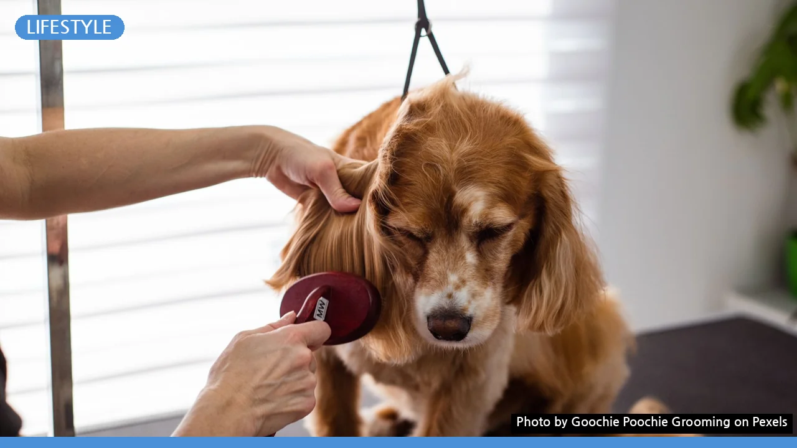
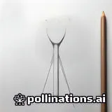

집안 곳곳 반려동물 털 청소, 이 3가지 도구로 끝내는 꿀팁
사진: Goochie Poochie Grooming / Pexels (무료 이미지, 출처 표기)
이불과 소파에 박힌 털, 물 묻힌 고무장갑 하나면 해결
매일 청소기를 돌려도 옷과 침구, 소파에 박혀 있는 반려동물 털 때문에 고민이신가요? 테이프 클리너만으로는 패브릭 깊숙이 박힌 털을 완벽히 제거하기 어렵습니다.
가장 손쉽고 강력한 방법은 일반 고무장갑에 물을 살짝 묻혀 한쪽 방향으로 문지르는 것입니다. 정전기와 마찰력 덕분에 침구 결 사이에 파묻힌 털이 뭉쳐서 쉽게 떨어져 나옵니다.
장소 및 재질별 맞춤형 털 제거 도구 비교
집안 내 다양한 재질에 따라 적합한 청소 도구를 사용하면 청소 시간을 절반 이상 줄일 수 있습니다.
초보 집사를 위한 단계별 털 청소 순서
털 청소를 할 때는 공기 중에 털이 날리지 않도록 청소 순서를 지키는 것이 매우 중요합니다.
- 1단계: 분무기로 공기 중 수분 공급
청소 전 분무기로 공중에 물을 살짝 뿌려 날아다니는 털을 바닥으로 가라앉힙니다. - 2단계: 위에서 아래로 1차 털 긁어내기
캣타워, 침대, 소파 등 높은 곳의 털을 고무장갑이나 스크래퍼로 긁어 모읍니다. - 3단계: 바닥 정전기 밀대 청소
청소기를 바로 돌리면 바람 때문에 털이 사방으로 날아갑니다. 먼저 정전기 청소포로 가볍게 밀어줍니다. - 4단계: HEPA 필터 청소기로 흡입
마지막으로 HEPA 필터(미세먼지 및 알레르기 유발 물질을 걸러내는 고성능 필터)가 탑재된 청소기로 마무리합니다.
세탁할 때 털을 획기적으로 줄이는 빨래 팁
털이 묻은 옷이나 이불을 그대로 세탁기에 넣으면 털이 다른 옷에 옮겨 붙거나 세탁기 배수구를 막을 수 있습니다.
세탁 전 반드시 테이프 클리너나 고무장갑으로 큼직한 털을 1차 제거하세요. 세탁 시에는 전용 실리콘 세탁볼을 함께 넣으면 마찰로 인해 옷감에서 털이 잘 떨어집니다.
건조기를 사용하는 것도 좋은 방법입니다. 건조기의 강력한 바람과 정전기 방지 기능이 옷감에 붙은 잔털을 배출구 필터로 모아줍니다.
반려동물 털 청소 시 꼭 알아두어야 할 주의사항
청소기 필터를 제때 청소하지 않으면 흡입력이 떨어질 뿐만 아니라 털에 머물던 세균과 냄새가 온 집안으로 다시 배출될 수 있습니다.
또한, 털을 빗겨주는 빗질(브러싱)을 매일 주기적으로 해주는 것이 가장 근본적인 예방법입니다. 농촌진흥청 국립축산과학원 안내에 따르면 털갈이 시기에는 하루 1~2회 전용 브러시로 빗어주는 것만으로도 실내 털 날림을 크게 줄일 수 있습니다.
가전제품이나 특정 청소 용품의 사용법 및 성능은 제조사 기준에 따라 상이할 수 있으므로 제품 사용 설명서를 사전에 확인하시길 권장합니다.
🔗 이 글도 함께 보면 좋아요: 아침 루틴 만들기 실패하는 3가지 이유와 실천 가능한 4단계 설계법
관련 추천 상품
이 포스팅은 쿠팡 파트너스 활동의 일환으로, 이에 따른 일정액의 수수료를 제공받습니다.
한눈에 보는 상품 목록

실리콘 털 제거 스크래퍼
반려동물 전용 세탁볼